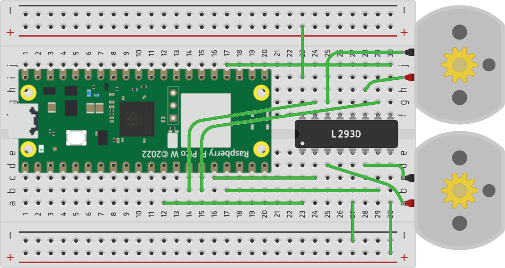
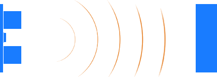

Robotika[1]
2024
Servo
Programozási kitérő
- mi van ha több van ugyanabból a perifériából?
- másoljuk le a kódot...
Programozási kitérő
- mi van ha több van ugyanabból a perifériából?
- másoljuk le a kódot...
Programozási kitérő
- mi van ha több van ugyanabból a perifériából?
- csoportosítsuk ki közös részeket
Programozási kitérő
from machine import PWM, Pin
class Buzzer:
_p: PWM
def __init__(self, p: Pin, freq: int = 2000):
self._p = PWM(p, freq=freq)
def set_freq(self, freq: int):
self._p.freq(freq)
def set_volume(self, v: float):
self._p.duty_u16(int(v * 0x7fff))
def off(self):
self._p.deinit()
config.json
Jó lenne ha a konfigurációt is ki lehetne csoportosítani...
config.json
{
"rgb_led": {
"r": 16,
"g": 15,
"b": 14,
"freq": 2000
},
"servo": {
"pin": 22,
"freq": 50,
"min_duty": 550000,
"mid_duty": 1400000,
"max_duty": 2390000
},
"buzzer": {
"pin": 4,
"freq": 300
}
}
config.json
from json import load
with open('config.json') as f:
cfg = load(f)
Motorok
- áram ⇒ forgás
- fun fact: fordítva is működik
- a forgás iránya az áram irányától függ
- de hogy adunk neki több áramot mint amit a pico tud?
- és hogy cseréljük meg a kábeleket menet közben???
H bridge
H bridge
H bridge
| EN | 1A | 2A | FUNCTION |
| H | L | H | Turn right |
| H | H | L | Turn left |
| H | L | L | Fast motor stop |
| H | H | H | Fast motor stop |
| L | X | X | Free-running |
H bridge
from machine import Pin, PWM
from utils import clamp
class HBridge:
_r_pwm: PWM
_l_pwm: PWM
_l_1: Pin
_l_2: Pin
_r_1: Pin
_r_2: Pin
def __init__(self,
l_pwm: Pin, r_pwm: Pin,
l_1: Pin, l_2: Pin,
r_1: Pin, r_2: Pin,
freq: int = 2000):
self._r_pwm = PWM(r_pwm, freq=freq)
self._l_pwm = PWM(l_pwm, freq=freq)
self._l_1 = l_1
self._l_2 = l_2
self._r_1 = r_1
self._r_2 = r_2
def drive(self, l: float, r: float):
l = clamp(l, -1, 1)
r = clamp(r, -1, 1)
self._l_1.value(l < 0)
self._l_2.value(l > 0)
self._l_pwm.duty_u16(int(abs(l) * 0xffff))
self._r_1.value(r > 0)
self._r_2.value(r < 0)
self._r_pwm.duty_u16(int(abs(r) * 0xffff))
def brake(self):
self._r_1.value(True)
self._r_2.value(True)
self._r_1.value(True)
self._r_2.value(True)
self._l_pwm.duty_u16(0)
self._r_pwm.duty_u16(0)
def set_freq(self, freq: int):
self._l_pwm.freq(freq)
self._r_pwm.freq(freq)
def off(self):
self.drive(0, 0)
self._l_pwm.deinit()
self._r_pwm.deinit()
Ultra sensor
Ultra sensor
Ultra sensor

Ultra sensor
from machine import Pin, PWM
from machine import Pin, time_pulse_us
from time import sleep_us
M_PER_US = const(0.0001715)
MIN_DIST = const(0.02)
MAX_DIST = const(4.0)
class UltraSensor:
_trig: Pin
_echo: Pin
def __init__(self, trig: Pin, echo: Pin):
self._trig = trig
self._echo = echo
def measure_sync(self) -> float | None:
self._trig.value(True)
sleep_us(15)
self._trig.value(False)
dur_us = time_pulse_us(self._echo, 1, 60_000)
m = dur_us * M_PER_US
if m < MIN_DIST or m > MAX_DIST:
return None
return m
Ultra sensor
- kissé zajos... ki kéne simítani
- átlagoljuk
- de hogyan tároljuk a korábbiakat?
Ultra sensor
Ultra sensor
Ultra sensor
from machine import Pin, PWM
from machine import Pin, time_pulse_us
from time import sleep_us
M_PER_US = const(0.0001715)
MIN_DIST = const(0.02)
MAX_DIST = const(4.0)
class UltraSensor:
_trig: Pin
_echo: Pin
def __init__(self, trig: Pin, echo: Pin):
self._trig = trig
self._echo = echo
def measure_sync(self) -> float | None:
self._trig.value(True)
sleep_us(15)
self._trig.value(False)
dur_us = time_pulse_us(self._echo, 1, 60_000)
m = dur_us * M_PER_US
if m < MIN_DIST or m > MAX_DIST:
return None
return m